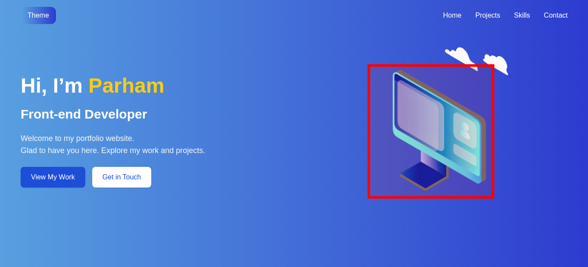

Tested 2025-09-29 18:09:41 using Chrome 138.0.7204.49 (runtime settings).
| Metric | Value |
|---|---|
| Page metrics | |
| Performance Score | 77 |
| Total Page Transfer Size | 1.6 MB |
| Requests | 11 |
| Timing metrics | |
| TTFB [median] | 47 ms |
| First Paint [median] | 156 ms |
| Fully Loaded [median] | 501 ms |
| Google Web Vitals | |
| TTFB [median] | 47 ms |
| First Contentful Paint (FCP) [median] | 156 ms |
| Largest Contentful Paint (LCP) [median] | 192 ms |
| Cumulative Layout Shift (CLS) [median] | 0.00 |
| Total Blocking Time [median] | 85 ms |
| Max Potential FID [median] | 135 ms |
| CPU metrics | |
| CPU long tasks [median] | 1 |
| CPU longest task duration | 147 ms |
| CPU last long task happens at | 300 ms |
| Visual Metrics | |
| First Visual Change [median] | 166 ms |
| Speed Index [median] | 273 ms |
| Visual Complete 85% [median] | 166 ms |
| Visual Complete 99% [median] | 6.000 s |
| Last Visual Change [median] | 6.566 s |
| Metric | min | median | mean | max |
|---|---|---|---|---|
| Visual Metrics | ||||
| FirstVisualChange | 133 ms | 166 ms | 188 ms | 266 ms |
| LastVisualChange | 6.500 s | 6.566 s | 6.555 s | 6.600 s |
| SpeedIndex | 212 ms | 273 ms | 289 ms | 382 ms |
| VisualReadiness | 6.334 s | 6.367 s | 6.367 s | 6.400 s |
| VisualComplete85 | 133 ms | 166 ms | 188 ms | 266 ms |
| VisualComplete95 | 166 ms | 200 ms | 233 ms | 333 ms |
| VisualComplete99 | 1.100 s | 6.000 s | 4.400 s | 6.100 s |
| Google Web Vitals | ||||
| Time To First Byte (TTFB) | 36 ms | 47 ms | 78 ms | 150 ms |
| Largest Contentful Paint (LCP) | 164 ms | 192 ms | 227 ms | 324 ms |
| First Contentful Paint (FCP) | 128 ms | 156 ms | 185 ms | 272 ms |
| Cumulative Layout Shift (CLS) | 0.0014 | 0.0014 | 0.0014 | 0.0014 |
| More metrics | ||||
| firstPaint | 128 ms | 156 ms | 185 ms | 272 ms |
| loadEventEnd | 426 ms | 454 ms | 473 ms | 540 ms |
| CPU | ||||
| Total Blocking Time | 78 ms | 85 ms | 87 ms | 97 ms |
| Max Potential FID | 128 ms | 135 ms | 137 ms | 147 ms |
| CPU long tasks | 1 | 1 | 1 | 1 |
| CPU last long task happens at | 272 ms | 300 ms | 323 ms | 398 ms |
Run 3 SpeedIndex median
Use--filmstrip.showAll to show all filmstrips.
 0 s0.1 sDOM Content Loaded Time 65 ms
0 s0.1 sDOM Content Loaded Time 65 msThe coach helps you find performance problems on your web page using web performance best practice rules. And gives you advice on privacy and best practices. Tested using Coach-core version 8.1.1.

| Title | Advice | Score | |||||||||||||||||||||
|---|---|---|---|---|---|---|---|---|---|---|---|---|---|---|---|---|---|---|---|---|---|---|---|
| Don't scale images in the browser (avoidScalingImages) | The page has 2 images that are scaled more than 100 pixels. It would be better if those images are sent so the browser don't need to scale them. | 80 | |||||||||||||||||||||
| Description: It's easy to scale images in the browser and make sure they look good in different devices, however that is bad for performance! Scaling images in the browser takes extra CPU time and will hurt performance on mobile. And the user will download extra kilobytes (sometimes megabytes) of data that could be avoided. Don't do that, make sure you create multiple version of the same image server-side and serve the appropriate one. | |||||||||||||||||||||||
| Offenders: | |||||||||||||||||||||||
| Inline CSS for faster first render (inlineCss) | The page loads 1 CSS request inside of head, try to inline the CSS for the first render and lazy load the rest. | 90 | |||||||||||||||||||||
| Description: In the early days of the Internet, inlining CSS was one of the ugliest things you can do. That has changed if you want your page to start rendering fast for your user. Always inline the critical CSS when you use HTTP/1 and HTTP/2 (avoid doing CSS requests that block rendering) and lazy load and cache the rest of the CSS. It is a little more complicated when using HTTP/2. Does your server support HTTP push? Then maybe that can help. Do you have a lot of users on a slow connection and are serving large chunks of HTML? Then it could be better to use the inline technique, becasue some servers always prioritize HTML content over CSS so the user needs to download the HTML first, before the CSS is downloaded. | |||||||||||||||||||||||
| Offenders: | |||||||||||||||||||||||
| Have a fast largest contentful paint (largestContentfulPaint) | You can add fetchPriority="high" to the image to increase the load priority in Chrome. The image is lazy loaded using the lazy attribute, you should avoid that on the LCP image. | 75 | |||||||||||||||||||||
| Description: Largest contentful paint is one of Google Web Vitals and reports the render time of the largest image or text block visible within the viewport, relative to when the page first started loading. To be fast according to Google, it needs to render before 2.5 seconds and results over 4 seconds is poor performance. | |||||||||||||||||||||||
| Avoid CPU Long Tasks (longTasks) | The page has 1 CPU long task with the total of 135 ms. The total blocking time is 85 ms . However the CPU Long Task is depending on the computer/phones actual CPU speed, so you should measure this on the same type of the device that your user is using. Use Geckoprofiler for Firefox or Chromes tracelog to debug your long tasks. | 80 | |||||||||||||||||||||
| Description: Long CPU tasks locks the thread. To the user this is commonly visible as a "locked up" page where the browser is unable to respond to user input; this is a major source of bad user experience on the web today. However the CPU Long Task is depending on the computer/phones actual CPU speed, so you should measure this on the same type of the device that your user is using. To debug you should use the Chrome timeline log and drag/drop it into devtools or use Firefox Geckoprofiler. | |||||||||||||||||||||||
| Offenders: | |||||||||||||||||||||||
| Avoid extra requests by setting cache headers (cacheHeaders) | The page has 10 requests that are missing a cache time. Configure a cache time so the browser doesn't need to download them every time. It will save 1.7 MB the next access. | 0 | |||||||||||||||||||||
| Description: The easiest way to make your page fast is to avoid doing requests to the server. Setting a cache header on your server response will tell the browser that it doesn't need to download the asset again during the configured cache time! Always try to set a cache time if the content doesn't change for every request. | |||||||||||||||||||||||
| Offenders: | |||||||||||||||||||||||
| The favicon should be small and cacheable (favicon) | The favicon size is 25.9 kB bytes. That's quite big, can you make it smaller? The favicon has no cache time. | 0 | |||||||||||||||||||||
| Description: It is easy to make the favicon big but please avoid doing that, because every browser will then perform an unnecessarily large download. And make sure the cache headers are set for a long time for the favicon. It is easy to miss since it's another content type. | |||||||||||||||||||||||
| Offenders: | |||||||||||||||||||||||
| Total JavaScript size shouldn't be too big (javascriptSize) | The total JavaScript transfer size is 1.6 MB and the uncompressed size is 7.1 MB. This is totally crazy! There is really room for improvement here. | 0 | |||||||||||||||||||||
| Description: A lot of JavaScript often means you are downloading more than you need. How complex is the page and what can the user do on the page? Do you use multiple JavaScript frameworks? | |||||||||||||||||||||||
Offenders:
| |||||||||||||||||||||||
Your best practice score is perfect!
| Title | Advice | Score |
|---|---|---|
| Serve your content securely (https) | What!! The page is not using HTTPS. Every unencrypted HTTP request reveals information about user’s behavior, read more about it at https://https.cio.gov/everything/. You can get a totally free SSL/TLS certificate from https://letsencrypt.org/. | 0 |
| Description: A page should always use HTTPS (https://https.cio.gov/everything/). You also need that for HTTP/2. You can get your free SSL/TLC certificate from https://letsencrypt.org/. | ||
| Use a good Content-Security-Policy header to make sure you you avoid Cross Site Scripting (XSS) attacks. (contentSecurityPolicyHeader) | Set a Content-Security-Policy header to make sure you are not open for Cross Site Scripting (XSS) attacks. You can start with setting a Content-Security-Policy-Report-Only header, that will only report the violation, not stop the download. | 0 |
| Description: Content Security Policy is delivered via a HTTP response header, and defines approved sources of content that the browser may load. It can be an effective countermeasure to Cross Site Scripting (XSS) attacks and is also widely supported and usually easily deployed. https://scotthelme.co.uk/content-security-policy-an-introduction/. | ||
| Offenders: | ||
| Set a referrer-policy header to make sure you do not leak user information. (referrerPolicyHeader) | Set a referrer-policy header to make sure you do not leak user information. | 0 |
| Description: Referrer Policy is a new header that allows a site to control how much information the browser includes with navigations away from a document and should be set by all sites. https://scotthelme.co.uk/a-new-security-header-referrer-policy/. | ||
| Offenders: | ||
| Page info | |
|---|---|
| Title | Home | Parham Portfolio |
| Width | 1365 |
| Height | 620 |
| DOM elements | 81 |
| Avg DOM depth | 5 |
| Max DOM depth | 8 |
| Iframes | 0 |
| Script tags | 12 |
| Local storage | 0 b |
| Session storage | 0 b |
| Network Information API | 4g |
Data collected using Wappalyzer version 6.10.66. With updated code from Webappanalyzer 2024-12-27. Use --browsertime.firefox.includeResponseBodies htmlor --browsertime.chrome.includeResponseBodies htmlto help Wappalyzer find more information about technologies used.
| Technology | Confidence | Category |
|---|---|---|
| React | 100 | JavaScript frameworks |
| Next.js | 100 | JavaScript frameworks Web frameworks Web servers Static site generator |
| Webpack | 100 | Miscellaneous |
Data from run 3
| Visual Metrics | |
|---|---|
| First Visual Change | 166 ms |
| Speed Index | 273 ms |
| Visual Complete 85% | 166 ms |
| Visual Complete 95% | 200 ms |
| Visual Complete 99% | 6.100 s |
| Last Visual Change | 6.566 s |
| Visual Readiness | 6.400 s |
| Navigation Timing | |
|---|---|
| backEndTime | 47 ms |
| domContentLoadedTime | 65 ms |
| domInteractiveTime | 65 ms |
| domainLookupTime | 1 ms |
| frontEndTime | 403 ms |
| pageDownloadTime | 4 ms |
| pageLoadTime | 454 ms |
| redirectionTime | 0 ms |
| serverConnectionTime | 2 ms |
| serverResponseTime | 45 ms |
| Google Web Vitals | |
|---|---|
| Time to first byte (TTFB) | 47 ms |
| First Contentful Paint (FCP) | 156 ms |
| Largest Contentful Paint (LCP) | 192 ms |
| Cumulative Layout Shift (CLS) | 0.00 |
| Total Blocking Time (TBT) | 97 ms |
| Extra timings | |
|---|---|
| TTFB | 47 ms |
| First Paint | 156 ms |
| Load Event End | 454 ms |
| Fully loaded | 501 ms |
When in time the page main content is rendered (collected using the Largest Contentful Paint API). Read more about Largest Contentful Paint.
| Element type | IMG |
| Element/tag | <img src="/hero-monitor.png" alt="Hero" width="300" height="300" class="z-10 w-48 sm:w-64 md:w-72 h-auto" loading="lazy" draggable="false"> |
| Render time | 192 ms |
| Element render delay | 83 ms |
| TTFB | 47 ms |
| Resource delay | 30 ms |
| Resource load duration | 32 ms |
| Load time | 110 ms |
| URL | http://host.docker.i...hero-monitor.avif |
| Size (width*height) | 88128 |
| DOM path | |
| div > section#home > div:eq(3) > picture > img> div > section#home > div:eq(3) > picture > img> | |

The largest contentful paint is highlighted in the image. If no element is highlighted the element was removed before the screenshot or the LCP API couldn't find the element.
The Largest Contentful Paint API highlighted this image as a part of the LCP.

0.00136 cumulative layout shift collected from the Cumulative Layout Shift API.
These HTML elements contribute most to the Cumulative Layout Shifts of the page. The higher score, the more layout shift.
| Score | HTML Element |
|---|---|
| 0.00136 | <div class="md:w-1/2 space-y-6 text-center md:text-left"></div> |
| body > div > section#home > div:eq(2) | |
The elements that have shifted place is highlighted in the image (that have a higher value than 0.01). If the element shifted outside of the viewport, you will not see it there. It can be hard to understand what content that has shifted, if that's the case, checkout the video or the filmstrip of the run.
Read more about the Long Animation Frames API here here.
The top 10 longest animation frames entries
| Blocking duration | Work duration | Render duration | PreLayout Duration | Style And Layout Duration |
|---|---|---|---|---|
| 97.5 ms | 153 ms | 0.3 ms | 0.2 ms | 0.1 ms |
| http://host.docker.internal:3003/_next/static/chunks/main-app.js?v=1759169429253 | ||||
Invoker: http://host.docker.internal:3003/_next/static/chunks/main-app.js?v=1759169429253 | ||||
There are no Server Timings.
There are no custom configured scripts.
There are no custom extra metrics from scripting.
How the page is built.
| Summary | |
|---|---|
| HTTP version | HTTP/1.1 |
| Total requests | 11 |
| Total domains | 1 |
| Total transfer size | 1.6 MB |
| Total content size | 6.9 MB |
| Responses missing compression | 8 |
| Number of cookies | 0 |
| Third party cookies | 0 |
| Requests per response code | |
|---|---|
| 200 | 11 |
| URL | Type | Transfer Size | Content Size |
|---|---|---|---|
| http://host.docker.i...hunks/main-app.js | javascript | 1.3 MB | 5.9 MB |
| http://host.docker.i...nks/app/layout.js | javascript | 99.1 KB | 431.2 KB |
| http://host.docker.i...hero-monitor.avif | image | 60.3 KB | 60.3 KB |
| http://host.docker.i...hunks/app/page.js | javascript | 52.9 KB | 194.2 KB |
| http://host.docker.i...unks/app/error.js | javascript | 37.4 KB | 120.9 KB |
| http://host.docker.i...ages-internals.js | javascript | 32.5 KB | 142.8 KB |
| http://host.docker.i...:3003/favicon.ico | favicon | 25.3 KB | 25.3 KB |
| http://host.docker.i...l:3003/cloud.avif | image | 19.4 KB | 19.4 KB |
| http://host.docker.i...chunks/webpack.js | javascript | 10.3 KB | 55.0 KB |
| http://host.docker.i...ss/app/layout.css | css | 6.2 KB | 26.1 KB |
| http://host.docker.internal:3003/ | html | 3.6 KB | 10.6 KB |
| Content | Header Size | Transfer Size | Content Size | Requests |
|---|---|---|---|---|
| html | 334 B | 3.6 KB | 10.6 KB | 1 |
| css | 355 B | 6.2 KB | 26.1 KB | 1 |
| javascript | 2.2 KB | 1.5 MB | 6.8 MB | 6 |
| image | 564 B | 79.7 KB | 79.7 KB | 2 |
| favicon | 267 B | 25.3 KB | 25.3 KB | 1 |
| Total | 3.7 KB | 1.6 MB | 6.9 MB | 11 |
| Domain | Total download time | Transfer Size | Content Size | Requests |
|---|---|---|---|---|
| host.docker.internal | 548 ms | 1.6 MB | 6.9 MB | 11 |
| type | min | median | max |
|---|---|---|---|
| Expires | 0 seconds | 0 seconds | 0 seconds |
| Last modified | 53 seconds | 58 seconds | 5 hours |
Included requests done after load event end.
| Content | Transfer Size | Requests |
|---|---|---|
| html | 0 b | 0 |
| css | 0 b | 0 |
| javascript | 0 b | 0 |
| image | 0 b | 0 |
| font | 0 b | 0 |
| favicon | 25.3 KB | 1 |
| Total | 25.3 KB | 1 |
Includes requests done after DOM content loaded.
| Content | Transfer Size | Requests |
|---|---|---|
| html | 0 b | 0 |
| css | 0 b | 0 |
| javascript | 0 b | 0 |
| image | 0 b | 0 |
| font | 0 b | 0 |
| favicon | 25.3 KB | 1 |
| Total | 25.3 KB | 1 |
Third party requests categorised by Third party web version 0.26.2.
Calculated using .*docker.* (use --firstParty to configure).
| Content | Header Size | Transfer Size | Content Size | Requests |
|---|---|---|---|---|
| html | 334 B | 3.6 KB | 10.6 KB | 1 |
| css | 355 B | 6.2 KB | 26.1 KB | 1 |
| javascript | 2.2 KB | 1.5 MB | 6.8 MB | 6 |
| image | 564 B | 79.7 KB | 79.7 KB | 2 |
| font | 0 b | 0 b | 0 b | 0 |
| favicon | 267 B | 25.3 KB | 25.3 KB | 1 |
| Total | 3.7 KB | 1.6 MB | 6.9 MB | 11 |
| Content | Header Size | Transfer Size | Content Size | Requests |
|---|---|---|---|---|
| html | 0 b | 0 b | 0 b | 0 |
| css | 0 b | 0 b | 0 b | 0 |
| javascript | 0 b | 0 b | 0 b | 0 |
| image | 0 b | 0 b | 0 b | 0 |
| font | 0 b | 0 b | 0 b | 0 |
| Total | N/A | N/A | N/A |
{kind=link}
{kind=link}
{kind=link}
{kind=link}
{kind=link}
{kind=link}
{kind=link}
{kind=link}
{kind=link}
{kind=link}
{kind=link}
{kind=link}
{kind=link}
{kind=link}
{kind=link}
{kind=link}
{kind=link}
{kind=link}
{kind=link}
{kind=link}
{kind=link}
{kind=link}
{kind=link}
{kind=link}
{kind=link}
{kind=link}
{kind=link}
{kind=link}
{kind=link}
{kind=link}
{kind=link}
{kind=link}
{kind=link}
{kind=link}
{kind=link}
{kind=link}
{kind=link}
{kind=link}
{kind=link}
{kind=link}
{kind=link}
{kind=link}
{kind=link}
{kind=link}
{kind=link}
{kind=link}
{kind=link}
{kind=link}
{kind=link}
{kind=link}
{kind=link}
{kind=link}
{kind=link}
{kind=link}
{kind=link}
{kind=link}
{kind=link}
{kind=link}
{kind=link}
{kind=link}
{kind=link}
{kind=link}
{kind=link}
{kind=link}
{kind=link}
{kind=link}